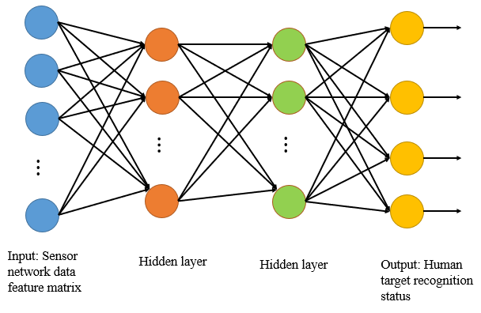
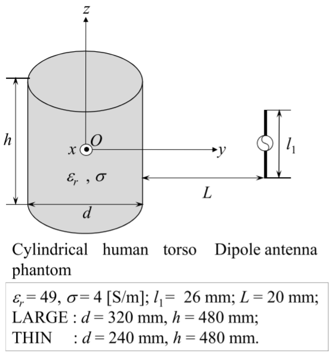
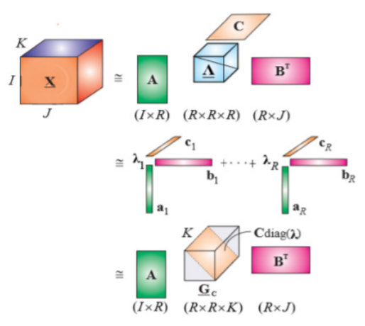
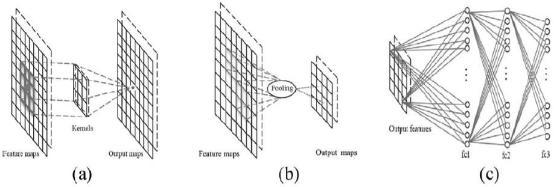

Min Zhang @ MiLAB Group
 |
Min Zhang (张敏) [Google Scholar] [DBLP] [Github] |
Biography
Currently, I am a joint Ph.D. student of Westlake University and Zhejiang University and a member of Machine Intellignece Lab (MiLAB) in Westlake University, advised by Dr.Donglin Wang.
I received my M.Sc. degree in the Department of Electronics & Communication Engineering (ECE) in June 2019 from Tianjin Normal University (TJNU).
I received my B.Sc. degree in School of Engineering in June 2016 from College Qingdao Agricultural University (HDXY).
News
[12/2020]: One paper on "Metric-based Few-shot Learning" is accepted to AAAI 2021.
[09/2020]: I become a Ph.D. student in Westlake University.
[03/2020]: The code of our PMAML (ECAI’20) is released.
[01/2020]: One paper on "Meta-based Few-shot Learning" is accepted to ECAI 2020.
[07/2017]: Invited talk at the International Conference in Communications, Signal Processing, and Systems (Harbin, China) on "Advances in Data Mining".
Research Interests
My research interests include Machine Learning and Computer Vision. Especially in,
Meta Learning
Few-shot Learning
Robot Learning
Publications
Siteng Huang, Min Zhang, Yachen Kang, Donglin Wang.
Attributes-Guided and Pure-Visual Attention Alignment for Few-Shot Recognition.
In: Proceedings of the 35th AAAI Conference on Artificial Intelligence (AAAI’21), 2021.
[Paper] [Code] [Details of paper]Min Zhang, Donglin Wang, Sibo Gai.
Knowledge Distillation for Model-agnostic Meta-learning.
In: European Conference on Artificial Intelligence (ECAI’20), 2020.
[Paper] [Code]Wei Wang, Min Zhang, Li Zhang.
Classification of Data Stream in Sensor Network With Small Samples.
In: IEEE Internet of Things Journal (IOT’18)*, 2018. Advisor
[Paper]Wei Wang, Min Zhang.
Tensor Deep Learning Model for Heterogeneous Data Fusion in Internet of Things.
In: IEEE Transactions on Emerging Topics in Computational Intelligence (TETCI’18)*, 2018. Advisor.
[Paper]Yang Li, Min Zhang.
Study on a Cylindrical Sensor Network for Intelligent Health Monitoring and Prognosis.
In: IEEE Access (Access’18), 2018.
[Paper]Yuliang Li, Min Zhang, Wei Wang.
Online Real-Time Analysis of Data Streams Based on an Incremental High-Order Deep Learning Model.
In: IEEE Access (Access’18), 2018.
[Paper]Wei Wang, Min Zhang.
Research on Data Flow Partitioning Based on Dynamic Feature Extraction.
In: International Conference in Communications, Signal Processing, and Systems (CSPS’18)*, 2018. Advisor.
[Paper]Min Zhang, Wei Wang.
Detection of Embryo Eggs Based on Tensor Depth Calculation Model.
In: International conference on Image, Video Processing and Artificial Intelligence (IVPAI’18), 2018.
[Paper]Wei Wang, Min Zhang, Dan Wang, Yu Jiang.
Kernel PCA Feature Extraction and the SVM Classification Algorithm for Multiple-status through-wall Human Being Detection.
In: EURASIP Journal on Wireless Communications & Networking (EURASIP’17), 2017. Advisor.
[Paper]Wei Wang, Min Zhang, Dan Wang, Yu Jiang, Yuliang Li, Hongda Wu.
Anomaly Detection Based on Kernel Principal Component and Principal Component Analysis.
In: International Conference in Communications, Signal Processing, and Systems (CSPS’17)*, 2017. Advisor.
[Paper]
 |
 |
|  |
 |
|  |
|  |
 |
|  |
 |
 |
Awards & Honors
Second-Class Freshmen Scholarship of Westlake University, 2020
Outstanding Graduate of Tianjin Normal University, 2019
Excellent Academic Scholarship of Tianjin Normal University, 2016-2019
Correspondence
Email: zhangmin@westlake.edu.cn; zhangmin.milab@gmail.com
Office:
Room 517, School of Engineering (No.2 Building), Yunqi Campus of Westlake University.
Address:
Min Zhang, Machine Intelligence Lab (MiLAB), Westlake University, Yunqi Campus, 18 Shilongshan Road,
Cloud Town, Xihu District, Hangzhou 310012, China
(杭州市西湖区云栖小镇石龙山街18号，西湖大学云栖校区，机器智能实验室，310012.)